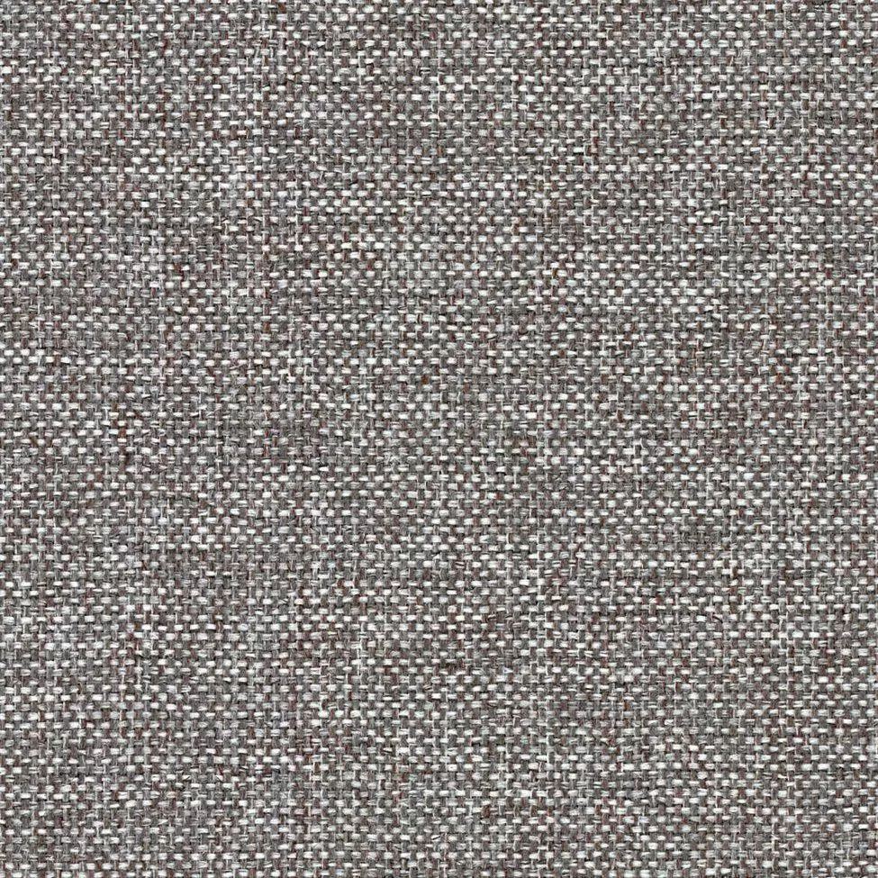

1. Tkanina

ZMIEŃ
Tkanina 1
Tkanina 2
Tkanina 3
2. Kolor nóżek
WYBIERAM
Wszystkie
Bez dopłaty
Welur
Plecionka
Ekoskóra
Riviera 91 (Davis)
Riviera 91 (Davis)
Riviera 91 (Davis)
Riviera 91 (Davis)
Riviera 91 (Davis)
Riviera 91 (Davis)
Riviera 91 (Davis)
Riviera 91 (Davis)
3. Układ narożnika
WYBIERZ
Prawy
Lewy
Submit
×